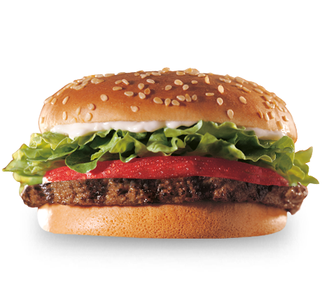

--250g de carne picada de vacuno y 250g de carne picada de cerdo
--2 huevos
--40g de pan rallado
--1 cucharada de mostaza (puedes añadir otra de salsa de tomate, si lo deseas)
--2 dientes de ajo y 1/4 de cebolla, picados y previamente pasados por la sartén
--sal y pimienta
--4 panes de hamburguesa
--Unas hojas de lechuga
--4 rodajas finas de tomate
--1 cebolla cortada en forma de aros
--ketchup, mahonesa, mostaz, etc. La salsa que más nos guste
1.- En un bol mezclamos los ingredientes de las hamburguesas caseras. Los huevos, les darán un toque de cremosidad extra mientras que el pan rallado que, como ves es poca cantidad para que mantengan dicha cremosidad, darán un toquecito de crujir. El ajo y la cebolla, las pocho previamente, para que no tenga un sabor demasiado salvaje aunque, si lo prefieres, puedes añadirlo en crudo. Mezclamos con las manos limpias.
2.- Ahora dividimos la masa e 4 porciones iguales. Las amasamos una a una, pasándola rápidamente de una mano a otra (así, logramos que se desarrolle la proteína de la carne, evitando que la hamburguesa se deshaga durante la cocción) y después, las aplastamos un poco, dándole la forma de hamburguesa.
3.- Las cocinamos. En una sartén antiadherente, ponemos tan solo una gotita de aceite, a fuego medio y colocamos sobre ella las hamburguesas. El tiempo exacto de cocción dependerá del punto deseado de la carne. Si la queremos poco hecha, con 3 minutos por cada una de sus caras será suficiente. Si la queremos más hecha, el doble de tiempo. Cuando le demos la vuelta, ponemos una loncha de queso encima de la hamburguesa, para que se vaya fundiendo.
4.- Una vez hechas, montamos las hamburguesas. Ponemos en el pan, al cual previamente lo hemos pasado un poco por la sartén para que esté caliente, una base de lechuga y encima una rodaja de tomate. Encima colocamos las hamburguesas caseras con la loncha de queso y encima, unos aros de cebolla. Terminamos aderezando con nuestra salsa favorita.
Ve mas recetas :3